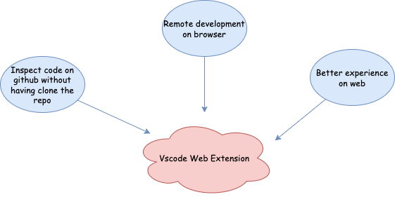
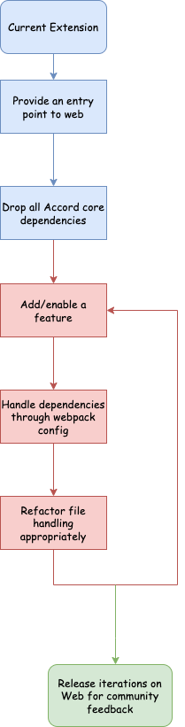
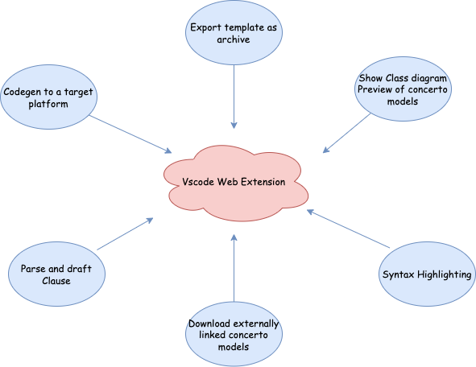
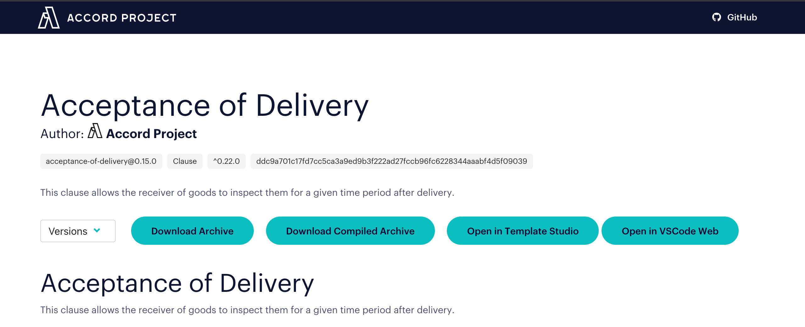
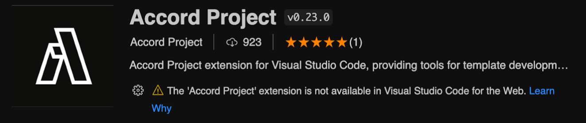

The first iteration of the Accord Project extension was released in 2019 when VSCode was still not available on web. A lot of has happened since, in the VSCode community(vscode.dev being one of them). The Accord Project extension provided a lot of features related to debugging, syntax highlighting and Accord specific inclusions.
The current VSCode Extension was not available on web. A lot of debugging and associated features, hence, were not available on web. Developing with Accord online was a not entirely convenient. With the extension enabled on web, the user can now use github codespace or VSCode web to play around with templates and have a much better experience while learning the Accord ecosystem. With the extension enabled on web, developers will now be able to inspect remote cicero template on a browser without having to download. This also provides for a better learning experience since you would rather not have your local disk cluttered with various templates during the initial learning process with the Accord Project.

The extensions installed in the browser version are executed in an extension host called the ‘web extension host’. A VSCode web extension runs in webworkers context unlike a desktop extension which is provided with Node context. This limits the web extension’s ability to only those features/functions that can be browserified. A web extension has access to a virtual file system unlike the desktop extension which has access to an actual file system. To perform file handling operations in a web extension, the VSCode API is to be used and every function is to pass through vscode.workspace.fs module. The primary aim of my project was to use bundling tools such as webpack to package the entire extension into an entry point which can run in the webworker context of web extension host. This also included refactoring the code so that every file operation passes through the vscode API and not the built-in fs module of node. The project mainly involved three part: - Analysis dependencies and dropping the same if they cannot function in webworkers context of web. - Analysing current file handling and refactoring them to work for web. - Enabling features in Web and fixing bugs that might arise. It was decided to follow the below route over the course of coding period.

I started off with bundling the extension with webpack. The result was a web extension that provided syntax highlighting to .cto, .ergo and grammar templates. The next step was iteratively enable all features on web. The features enables by the Mid-Eval were as follows. Prior to - Show Preview for .cto files and grammar templates - Download External Models for a cto file - Export Class diagram for a cto file - Export Cicero archive option - Parse Clause

The above features were tested locally but when the first web version was published after mid evaluation, the same extension ran into file handling errors when run on github repositories. After referring to the documentation, file handling was refactored again to prevent issues with remote repositories. The next weeks were spent on addressing these issues and enabling two more feautures - CodeGen Compilation - Draft clause An "Open In VSCode Web" option was added to template-library that lets user try out templates on github codespaces.

I had amazing experience over the course of this summer. From digging into LSP documentations to debugging errors in the web-extension, I learnt a lot. I also experienced first hand as to how the code you write is not the end of it. The first version of the VSCode extension enabled in web lacked the ability to read files from remote repositories. Trying to solve this issue, I learnt how every line the documentation (VSCode docs in my case) is a meaningful solution to just another thing. Weekly interactions with Dan helped me improve my communication skills. To sum up, I can safely say that I am a better programer now than I was before this experience.
I also maintained a journal to keep track what was happening over the course. The same can be found here.
The web extension was enabled on web with features detailed above. The Accord Project community can now develop templates online with ease.
